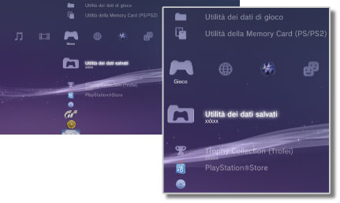

Gioco > Categoria Gioco
Categoria Gioco
Sotto  (Gioco) sono visualizzate le seguenti icone. Le icone visualizzate variano in base alle condizioni di utilizzo.
(Gioco) sono visualizzate le seguenti icone. Le icone visualizzate variano in base alle condizioni di utilizzo.

 |
PlayStation®Store | Consente di visualizzare informazioni di PlayStation®Store. |
|---|---|---|
 |
Esci dal gioco | Consente di uscire dal software in formato PlayStation®3. Questa icona è visualizzata solo durante il gioco. |
 |
(nome del titolo) | Riproduce un titolo del software in formato PlayStation®3. Quando si seleziona l'icona, viene visualizzata un'immagine. |
  |
Disco per PlayStation®2 | Consente di riprodurre un titolo software in formato PlayStation®2. |
 |
Disco per PlayStation® | Consente di riprodurre un titolo software in formato PlayStation®. |
 |
Utilità dei dati salvati | Copia/elimina o visualizza informazioni sui dati salvati per il software in formato PlayStation®3. |
 |
Utilità della Memory Card (PS/PS2) | Crea e assegna ingressi per le Memory Card interne ai fini del salvataggio di dati per il software in formato PlayStation®2/PlayStation®. È inoltre possibile copiare/eliminare o visualizzare informazioni sui dati salvati. |
 |
Utilità dei dati di gioco | Per alcuni giochi è possibile salvare dati aggiuntivi. È possibile eliminare o visualizzare informazioni sui dati. |
 |
Trophy Collection (Trofei) | Consente di visualizzare i trofei vinti nei giochi che supportano tale funzionalità. Quando si raggiungono determinati livelli o si completano operazioni richieste nel gioco, è possibile ottenere trofei per i propri risultati. |
 |
(software in formato PlayStation®3 o PlayStation®2 installato sul disco rigido) | Software in formato PlayStation®3 o PlayStation®2 installato sul disco rigido. Viene visualizzata un'immagine in miniatura per il gioco. |
 |
(dati scaricati sul disco rigido) | Questa icona viene visualizzata per i dati sui giochi o i dati di espansione scaricati sul disco rigido. I dati vengono installati all'avvio. L'icona cambia in base al tipo di dati. |
Note
 o
o  viene visualizzato per il contenuto soggetto a restrizioni del filtro contenuti. Il contenuto può essere riprodotto immettendo una password a quattro cifre. La password può essere configurata sotto
viene visualizzato per il contenuto soggetto a restrizioni del filtro contenuti. Il contenuto può essere riprodotto immettendo una password a quattro cifre. La password può essere configurata sotto  (Impostazioni) >
(Impostazioni) >  (Impostazioni di sicurezza).
(Impostazioni di sicurezza). - Se un dispositivo che non è compatibile con lo standard HDCP (High-bandwidth Digital Content Protection) viene collegato al sistema utilizzando un cavo HDMI, non è possibile emettere video e/o audio dal sistema.
- I dischi BD (Blu-ray Disc) protetti da copyright possono emettere soltanto a 1080p utilizzando un cavo HDMI collegato a un dispositivo che è compatibile con lo standard HDCP.
- In rari casi, i dischi e altri supporti potrebbero non funzionare correttamente quando riprodotti nel sistema PS3™. Tale problema è causato principalmente da variazioni del processo produttivo o della codifica del software.
Avvisi
- Alcuni titoli di software in formato PlayStation®2 o PlayStation® possono essere eseguiti in modo differente sul sistema PS3™ rispetto all'esecuzione sui sistemi PlayStation®2 o PlayStation®, oppure non vengono eseguiti correttamente sul sistema PS3™.
- Inoltre, il software in formato PlayStation®2 non è riproducibile su alcuni sistemi PS3™. Per i dettagli, vedere [Tipi di dischi riproducibili], visitare il sito Web di SCE per la propria zona o rivedere la documentazione inclusa con il sistema PS3™.